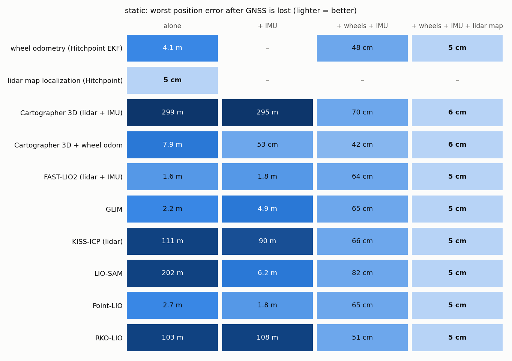
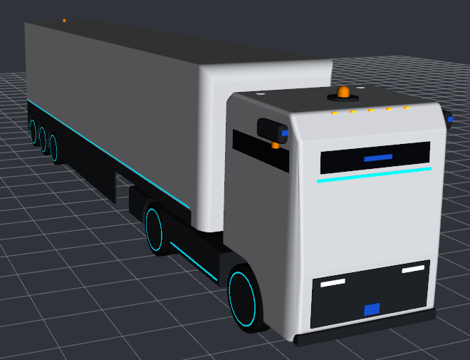

Hitchpoint: autonomous truck-trailer
Personal project, ongoing
A cabless tractor with a 13.6 m semi-trailer that drives a container port on its own lane map, stops for people ahead and behind, and reverses into dock doors. Every module has an evaluator against Gazebo ground truth.
- Lidar map localisation fused into the global EKF, with a live map update for a yard that changes.
- Benchmark of 8 open-source lidar SLAM and LIO methods (FAST-LIO2, Point-LIO, LIO-SAM, GLIM, KISS-ICP, RKO-LIO, Cartographer 3D) under GNSS loss.
- Lidar-based hitch-angle EKF and a cascaded reversing controller with jackknife protection.
The map localisation results use an ideal map ray-cast from the world geometry; the SLAM methods run without a map. One run per scenario.
- Without GNSS, 2.6 km mission
- 2.7 cm RMSE, ideal map
- Docking after 193 m in reverse
- 3.0 cm off centre line
- Hitch angle from tractor lidar
- 0.22° RMSE
- Forward tracking up to 30 km/h
- 3.2 cm RMSE

